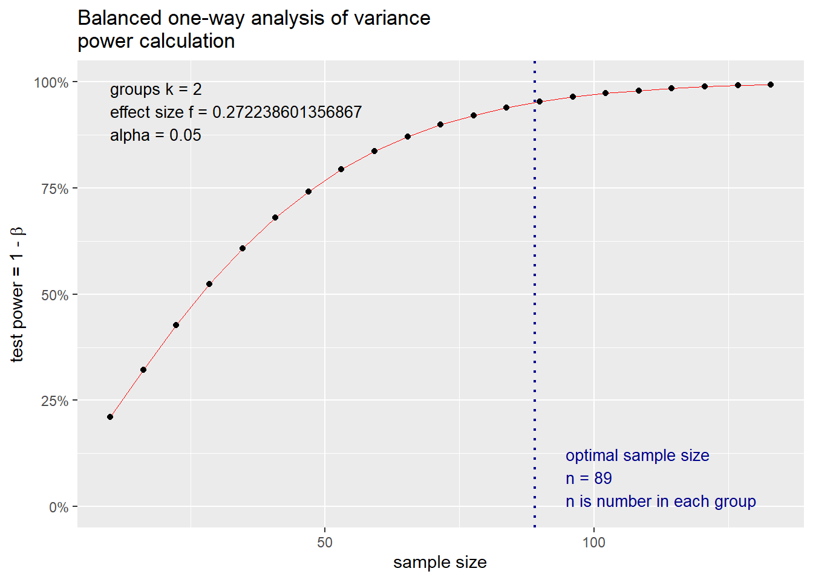

![]()
if (!"pacman" %in% rownames(installed.packages())) install.packages("pacman")
library(pacman)
pacman::p_load(tidyverse, pwr, compute.es)
Connect with me on Open Science Framework | Contact me via LinkedIn
It might be necessary to use right-click -> open in a new browser window depending on your machine.
R analysis script presenting the solutions for the exercise in Sensory Marketing regarding Girard et al. (2019). In one of the questions students are asked: How many respondents should one at minimum calculate for a replication of study 1’s results regarding perceived service value? Assumptions: equal split to scent vs. no scent conditions, \(\alpha\)=5%, \(\beta\)=5%, between-subjects ANOVA).
The purpose of this script does not solely lay in answering the exercise question. Moreover, studying these scripts should students make become familiar with some aspects of working in R.
If this grabs your attention
If this exercise grabs your attention, please check out our master study programs at the Otto-von-Guericke-University in Magdeburg (Germany) by clicking on the logo!

1 Loading packages
Beware!
R is a context-sensitive language. Thus, ‘data’ will be interpreted not in the same way as ‘Data’ will.
In R most functionality is provided by additional packages.
Most of the packages are well-documented, see: https://cran.r-project.org/
The code chunk below first evaluates if the package pacman (Rinker & Kurkiewicz, 2018) is already installed on your machine. If yes, the corresponding package will be loaded. If not, R will install the package.
Alternatively, you can do this manually first by executing install.packages(“pacman”) and then library(pacman).
The second line then loads the package pacman.
The third line uses the function p_load() from the pacman package to install (if necessary) and loads all packages that we provide as arguments (e.g., pwr (Champely, 2020), which provides functions for statistical power calculations).
Expand to learn more about calling functions
In all code chunks throughout this script, you can receive additional help on each used function by clicking on its name (or via right-click and then opening in a new browser tab). Alternatively, when coding, we can see which arguments a function understands by pressing ‘F1’ while setting the cursor to the function’s name.
Here is the R session info which gives you information on my machine, all loaded packages, and their version:
sessionInfo()R version 4.3.1 (2023-06-16 ucrt)
Platform: x86_64-w64-mingw32/x64 (64-bit)
Running under: Windows 11 x64 (build 22621)
Matrix products: default
locale:
[1] LC_COLLATE=German_Germany.utf8 LC_CTYPE=German_Germany.utf8
[3] LC_MONETARY=German_Germany.utf8 LC_NUMERIC=C
[5] LC_TIME=German_Germany.utf8
time zone: Europe/Berlin
tzcode source: internal
attached base packages:
[1] stats graphics grDevices utils datasets methods base
other attached packages:
[1] compute.es_0.2-5 pwr_1.3-0 htmltools_0.5.6.1 quarto_1.3
[5] ggpubr_0.6.0 lubridate_1.9.3 forcats_1.0.0 stringr_1.5.0
[9] dplyr_1.1.3 purrr_1.0.2 readr_2.1.4 tidyr_1.3.0
[13] tibble_3.2.1 ggplot2_3.4.4 tidyverse_2.0.0 labelled_2.12.0
[17] knitr_1.44 kableExtra_1.3.4 haven_2.5.3 pacman_0.5.1
loaded via a namespace (and not attached):
[1] gtable_0.3.4 xfun_0.40 processx_3.8.2 rstatix_0.7.2
[5] tzdb_0.4.0 vctrs_0.6.4 tools_4.3.1 ps_1.7.5
[9] generics_0.1.3 fansi_1.0.5 pkgconfig_2.0.3 webshot_0.5.5
[13] lifecycle_1.0.3 compiler_4.3.1 munsell_0.5.0 carData_3.0-5
[17] yaml_2.3.7 pillar_1.9.0 later_1.3.1 car_3.1-2
[21] abind_1.4-5 tidyselect_1.2.0 rvest_1.0.3 digest_0.6.33
[25] stringi_1.7.12 fastmap_1.1.1 grid_4.3.1 colorspace_2.1-0
[29] cli_3.6.1 magrittr_2.0.3 utf8_1.2.3 broom_1.0.5
[33] withr_2.5.1 scales_1.2.1 backports_1.4.1 timechange_0.2.0
[37] rmarkdown_2.25 httr_1.4.7 ggsignif_0.6.4 hms_1.1.3
[41] evaluate_0.22 viridisLite_0.4.2 rlang_1.1.1 Rcpp_1.0.11
[45] glue_1.6.2 xml2_1.3.5 svglite_2.1.2 rstudioapi_0.15.0
[49] jsonlite_1.8.7 R6_2.5.1 systemfonts_1.0.52 Finding an answer to question #9
How many respondents should one at minimum calculate for a replication of Study 1’s results regarding perceived service value? Assumptions: equal split to scent vs. no scent conditions, \(\alpha\)=5%, \(\beta\)=5%, between-subjects ANOVA).
We use an ANOVA here.
2.1 Calculate effect size Cohen’s f
We have seen from our exercise that the program G*Power (Faul, Erdfelder, Lang, & Buchner, 2007) requires the effect size measure Cohen’s f (Cohen, 1988). The same holds for the pwr package (Champely, 2020), which we will, again, use to conduct power analysis in R. Therefore, we first need to convert information provided by the JSR article into a sample estimate of f.
Information the article provides:
“[…] and service value, Mscented = 3.69, SD = 1.37 versus Munscented = 3.05, SD = 1.38, F(1, 195) = 14.521, p < .001, \(\eta^{2}_{p}\) = .069, than those in the unscented condition, […]”
From this, we can extract:
- the effective net sample size (n-k)=195, thus n=197 since we compare 2 groups
- The alternative effect size measure \(\eta^{2}_{p}\), which is 0.069
- The F-value, which is 14.521
This is all that we need to first calculate the observed effect size Cohen’s f (Cohen, 1988). According the Cohen (1988, p. 281) \(\eta^{2}_{p}\) can easily be converted to f by a simple formula: f= \(\sqrt{\frac{\eta^{2}}{1-\eta^{2}}}\) Therefore, we need to solve \(\sqrt{\frac{0.069}{1-0.069}}\)
We achieve this by using the next code chunk. Within this code chunk, we use the sqrt() function (place the cursor in the function and press ‘F1’ to see help), which calculates the square root of a number. We feed this function with the value of \(\eta^{2}_{p}\)=0.069. We assign the results to an object that we call ‘Cohen_f’.
In the next line, we call the object and simultaneously round the results to 4 digits. This is obtained by using the round() function.
Cohen_f <- sqrt(0.069 / (1 - 0.069))
round(Cohen_f, digits = 4)[1] 0.2722
We can see that the calculated effect size 0.2722 perfectly mirrors the one we have seen in the exercise slides using G*Power.
A common classification for Cohen’s f is: [0.1 | 0.25[ - small effect, [0.25 | 0.4[ - medium effect, and [0.4 | 1] - large effect.
2.2 Conduct A priori power analysis to search for minimum n
In the question, we are asked for \(\beta\)=5%, which corresponds to a statistical power of 95%.
To estimate a minimum sample size n for the replication, we apply the pwr.anova.test() function from the pwr package. This function needs us to provide 5 arguments to fill its parameters. These are (see help by pressing ‘F1’):
- k = The number of groups to compare (i.e., 2)
- n = Number of observations (per group) and we are assuming that we will be able to allocate participants in a way that both groups are of equal size (called balanced)
- f = Effect size Cohen’s f
- sig.level = Significance level (Type I error probability \(\alpha\))
- power = Power of test (1 minus Type II error probability)
The function, furthermore, assumes us to set one of these arguments to NULL. By doing so, we tell the function to use the remaining 4 parameters to search for the value of the fifth. In our case, we are searching for ‘n’, therefore, we set ‘n=NULL’.
We assign the results of our power analysis to a new object named ‘results’. Then we call for its content.
results <- pwr.anova.test(k = 2, n = NULL, f = Cohen_f, sig.level = 0.05, power = 0.95)
results Balanced one-way analysis of variance power calculation
k = 2
n = 88.63934
f = 0.2722386
sig.level = 0.05
power = 0.95NOTE: n is number in each group
We can see that the calculated sample size per group 88.6393365 only closely mirrors the one we have seen in G*Power 3 (Faul et al., 2007) at n=89. We have to round upwards to end up with 89. For the total sample size, we just multiply by 2, which gives 178.
2.3 Visualize results
In a last step, we can visualize the relationship between the expected statistical power and different sample sizes.
For this purpose, we apply the plot() function with the ‘results’ object and a catchy label for the x-axes as arguments.
plot(results, xlab = "sample size")
From this plot, we can alternatively extract the same information for sample size planning.
References
Champely, S. (2020). Pwr: Basic functions for power analysis. Retrieved from https://CRAN.R-project.org/package=pwr
Cohen, J. (1988). Statistical power analysis for the behavioral sciences (2nd ed.). Lawrence Erlbaum.
Faul, F., Erdfelder, E., Lang, A.-G., & Buchner, A. (2007). G*Power 3: A flexible statistical power analysis program for the social, behavioral, and biomedical sciences. Behavior Research Methods, 39(2), 175–191. doi: 10.3758/bf03193146
Girard, A., Lichters, M., Sarstedt, M., & Biswas, D. (2019). Short- and Long-Term Effects of Nonconsciously Processed Ambient Scents in a Servicescape: Findings From Two Field Experiments. Journal of Service Research, 22(4), 440–455. doi: 10.1177/1094670519842333
Rinker, T. W., & Kurkiewicz, D. (2018). Pacman: Package management for r. Retrieved from http://github.com/trinker/pacman
Citation
For attribution, please cite this work as:
Prof. Dr. Lichters, M. (2023, October 16). Sensory Marketing &
Product Innovation: Exercise 3 - Short- and Long-term Effects of
nonconsciously Processed Ambient Scents. Retrieved from https://rpubs.com/M_Lichters/smpiexercise3